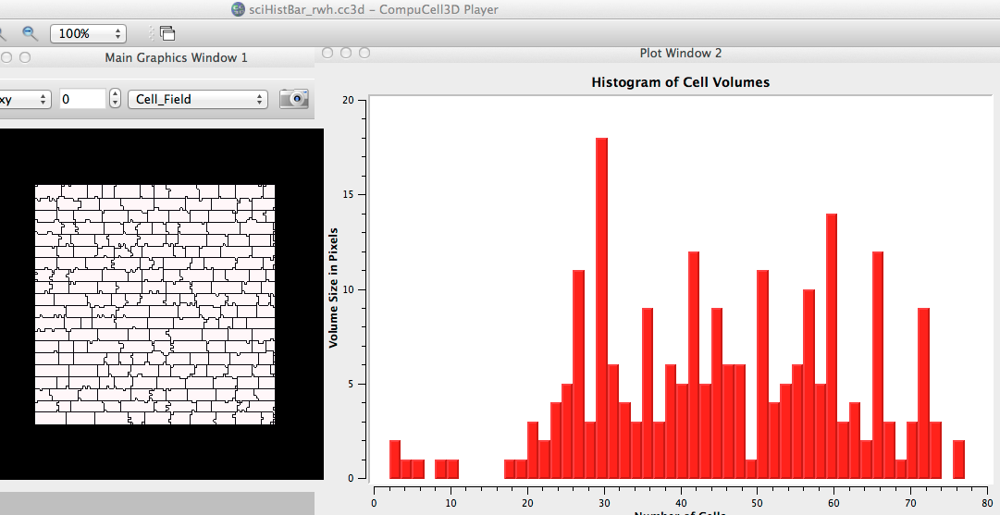

In examples_PythonTutorial/scientificHistBarPlots/Simulation/, we do the following (in the steppable 'Step' method):
(n3, bins3) = numpy.histogram(volList, bins=50)
...
self.pW.addHistPlotData('Hist 3',n3,bins3)
which produces:
n3= [ 2 1 1 0 1 1 0 0 0 0 1 1 3 2 4 5 11 3 18 6 4 3 9 3 6 5 12 5 9 6 6 1 11 4 5 6 10 5 14 3 4 2 12 3 1 3 9 3 0 2] bins3= [ 2. 3.5 5. 6.5 8. 9.5 11. 12.5 14. 15.5 17. 18.5 20. 21.5 23. 24.5 26. 27.5 29. 30.5 32. 33.5 35. 36.5 38. 39.5 41. 42.5 44. 45.5 47. 48.5 50. 51.5 53. 54.5 56. 57.5 59. 60.5 62. 63.5 65. 66.5 68. 69.5 71. 72.5 74. 75.5 77. ]
resulting in the following plot:
